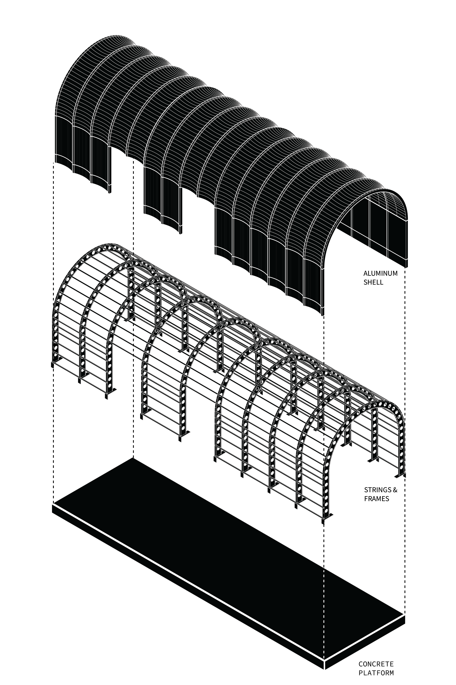

About
Pedro Ortiz is an architect and designer from Paraguay, South America. He holds a Master of Design from the University of California and a Master of Architecture from the Rhode Island School of Design (RISD).
His work spans a wide range of scales, from furniture and product design to corporate and residential architecture. Across these contexts, his practice is driven by a careful attention to site, material, and use, treating design as a way to connect people to the spaces and objects they inhabit.
Pedro Ortiz es arquitecto y diseñador paraguayo. Su trabajo se desarrolla entre distintas escalas, desde el diseño de mobiliario y objetos hasta proyectos de arquitectura corporativa y residencial. Su práctica valora la relación entre el sitio, los materiales y las personas, entendiendo el diseño como una herramienta para crear vínculos significativos con el entorno construido.